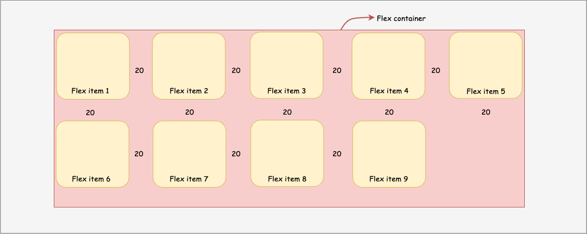

Flex
The Flexible Box Layout Model (flexbox) is a layout model designed for one-dimensional content. It excels at taking a bunch of items which have different sizes, and returning the best layout for those items.
This is the ideal layout model for this sidebar pattern. Flexbox not only helps lay the sidebar and content out inline, but where there's not enough space remaining, the sidebar will break onto a new line. Instead of setting rigid dimensions for the browser to follow, with flexbox, you can instead provide flexible boundaries to hint how the content could display.
CSS Flexbox : Harmony of two axes
When working with flexbox you need to think in terms of two axes — the main axis and the cross axis. The main axis is defined by the flex-direction property, and the cross axis runs perpendicular to it. Everything we do with flexbox refers back to these axes, so it is worth understanding how they work from the outset.
Overview
The flexbox display is very straightforward. You align items according to either axes using already defined properties
You can choose the direction to align your components
Direct children of the flex container can be controlled from the parent.
You can control children individually as well.
You can choose many ways in which you want to spread the children components in a parent container
You can choose which axis will be the main one.
Flex is very powerful to control children inside a parent container in a given direction
Flex terminology
Axis
Flex allows us to choose which axis we want to work with.
The main axis is defined by flex-direction, which has four possible values: row; row-reverse; column; column-reverse
Justify Content
Justify content is one of the two most important and used properties, as it allow us to place children in the main axis.

Align Items
align-items is the other important property, it allows us to place children according to the cross axis

Gap
Similar to grid, this property allow us to define the distance between each child in the main direction
